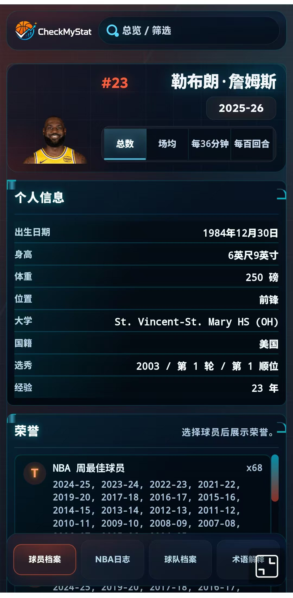
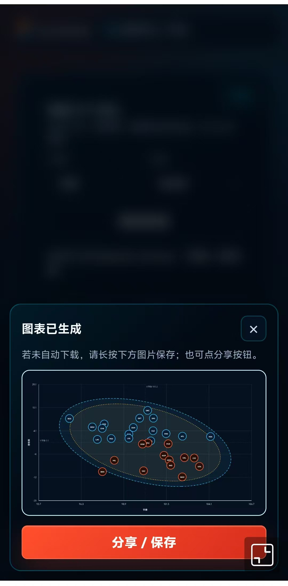
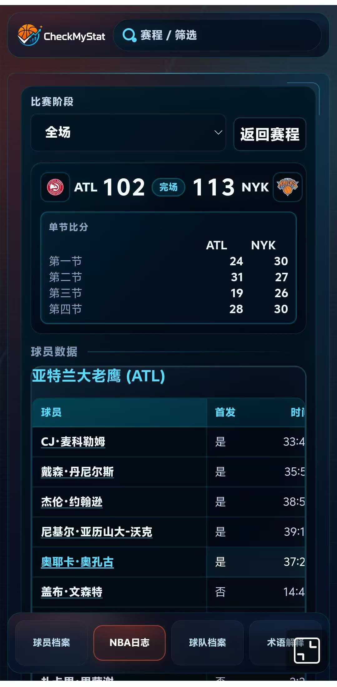

2024.7 - 至今
上海财经大学 · 统计与管理学院
- 研究生，应用统计专业，方向为 大数据技术与经济统计。
- 重点训练：统计建模、机器学习、时间序列、空间统计、NLP 与经济指数应用。
Data Science · LLM Analytics · Business Decisioning
上海财经大学应用统计研究生，面向 AI 驱动的数据科学、商业策略验证、因果推断 与 LLM + 数据分析 场景，擅长用 Python / SQL / 统计建模把复杂业务问题拆解为可验证、可落地的数据方案。
Profile
Education
Experience
2024.10 - 2025.10
商业地产项目数据分析师 · 数据驱动洞察 / 指标体系创新 / 可视化决策支持
挖掘与分析统计公报、微信小程序、大众点评等多源数据，深度挖掘与清洗非结构化与分散数据，构建清晰多维表单。
使用 Python / SQL 构建本地通勤率、平均通勤距离、客群画像等指标，将模糊业务问题转化为可比较、可验证的量化口径。
运用 geopandas 绘制交通网络、缓冲区与栅格数据，识别区域可达性、通勤结构与潜在客群，为区位判断提供数据证据。
使用 Tableau 输出趋势图、分布图与分析看板，把分析结论转化为业务方可快速理解和复用的决策材料。
Skills
Selected Projects
两个个人项目均由我一人 vibe coding 完成，覆盖需求拆解、交互原型、前后端实现与部署验证。

基于 LangGraph、大模型接口与规则引擎构建电商智能助手，把用户售后咨询自动转化为问题分类、优先级、缺失凭证、命中规则、处理建议、客服话术和转人工决策。



面向 NBA 球员、球队、赛程和对位场景，使用 NBA Stats / Live 数据构建数据分析网站原型，提供球员档案、投篮热区、传球网络、排行榜、球队档案与伤病影响分析。
Campus & Practice
2020.9 - 2024.6
2021.3 - 2022.10
Contact